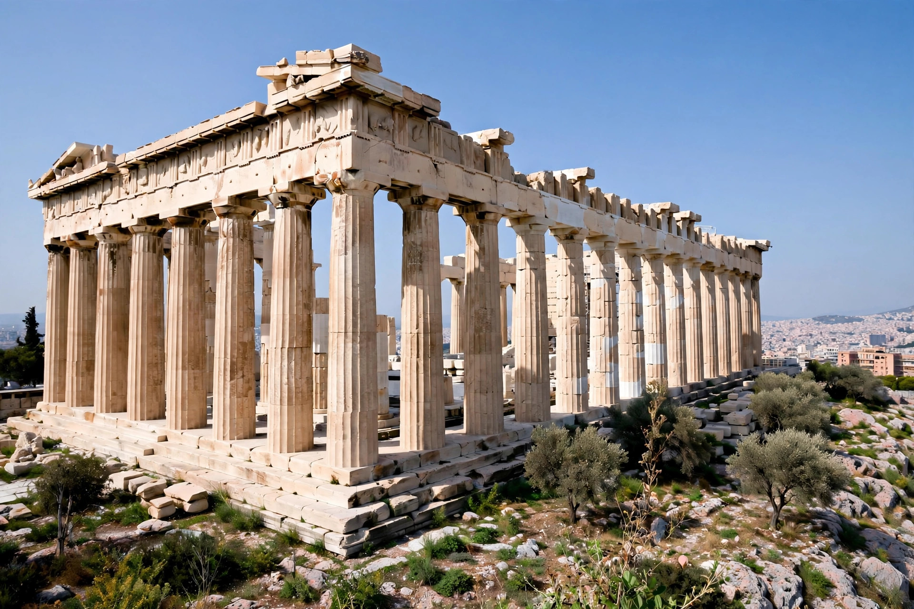

The Parthenon is a former temple on the Athenian Acropolis, Greece, dedicated to the goddess Athena, whom the people of Athens considered their patroness. Construction began in 447 BC, when the Delian League was at the peak of its power, and was completed in 432 BC. It is the most important surviving building of Classical Greece, and its sculptural decoration, much of it now in the British Museum as the Parthenon Marbles, is considered the high point of Greek art.
| Parthenon | |
|---|---|
 The Parthenon in 1978 | |
| Location | Acropolis, Athens, Greece |
| Built | 447–432 BC |
| Architects | Iktinos and Kallikrates |
| Sculptor | Phidias (oversight) |
| Style | Doric order, Classical Greek |
Built entirely of Pentelic marble, the Parthenon is a peripteral Doric temple with 8 columns on the facades and 17 along the sides, measuring about 69.5 by 30.9 metres at the stylobate. Its architects, Iktinos and Kallikrates, applied subtle refinements — entasis (slight swelling of the columns), upward curvature of the platform, and inward inclination of the columns — that correct optical illusions and give the building its celebrated harmony. Inside stood Phidias's colossal chryselephantine statue of Athena Parthenos.
The temple replaced an earlier structure destroyed by the Persians in 480 BC. For a thousand years it remained a temple of Athena; in late antiquity it became a Christian church dedicated to the Virgin Mary, and under Ottoman rule a mosque. In 1687, during the Venetian siege of Athens, an Ottoman powder magazine inside the building exploded, blowing off the roof and wrecking much of the structure. Between 1801 and 1812, Lord Elgin's agents removed many surviving sculptures to Britain, where they remain in the British Museum — a removal Greece continues to contest. Restoration work on the Acropolis has proceeded since 1975.
The decorative programme included 92 carved metopes depicting mythical battles (Gigantomachy, Amazonomachy, Centauromachy and the sack of Troy), a continuous Ionic frieze around the cella interpreted as the Panathenaic procession, and pedimental sculptures showing the birth of Athena (east) and her contest with Poseidon for Athens (west).